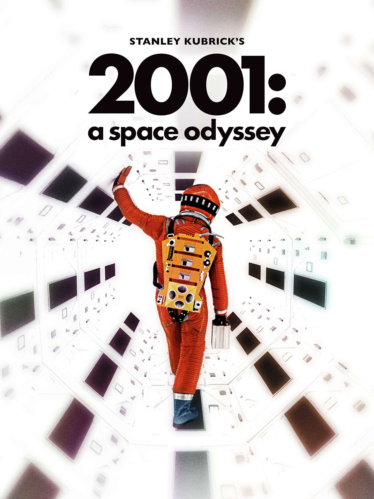

Movie G@llery

2001:A Space Odyssey
Both 'Interstellar' and 'Gravity took us out of this world,but the reputation od Stanley Kubrik's classic now rereleased is safe
Release date:28 November 2014
Director:Stanley Kubrick
Cast:William Sylvester,Keir Dullea
Language:English

The Godfather
Michael Corleone decides to put an end to all the criminal activities his family is involved in. He decides that his nephew will be the successor of his empire, however, the Mob refuses to let him go.
Release date:24 March 1972
Director: Francis Ford Coppola
Cast:William Sylvester,Keir Dullea
Language:English
Citizen Kane
The investigation of a publishing tycoon's dying words reveals conflicting stories about his scandalous life.
Release date:5 September 1941
Director:Orson Welles
Cast:William Sylvester,Keir Dullea
Language:English

Raiders Of The Lost Ark
Archaeology professor Indiana Jones ventures to seize a biblical artefact known as the Ark of the Covenant. While doing so, he puts up a fight against Renee and a troop of Nazis.
Release date:10 December 1981
Director: Steven Spielberg
Cast:William Sylvester,Keir Dullea
Language:English
There Will Be Blood
Daniel Plainview is a ruthless oil prospector who goes on a relentless pursuit to become the most powerful oil tycoon. For this, he even resorts to manipulating and using his adopted son
Release date:26 December 2007
Director: Paul Thomas Anderson
Cast:William Sylvester,Keir Dullea
Language:English